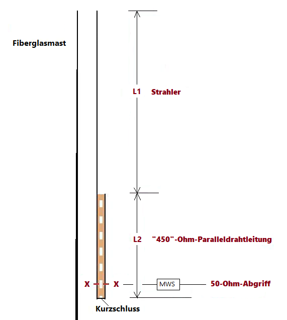

1. Anpassung mit einer symmetrischen Zweidrahtleitung (Wireman) als λ/4-Transformator Vertikale endgespeiste Halbwellenantenne mit symmetrischem Wireman λ/4-Transformator (Zeppelinantenne; Monoband) für das 20m-, 17m-, 15m-, 10m-Band
Genauere Längenangaben für die Herstellung einer endgespeisten Halbwellenantenne mit einem Viertelwellentransformator sind oft zu allgemein gehalten. In der Praxis zeigt sich, dass die genaue Strahlerlänge oder die Länge des λ/4-Transformator nicht immer stimmen. Auch die 50 Ω -Einspeisung sollte an der richtigen Stelle erfolgen. Die Veränderung der Länge eines Elementes beeinflusst dann die Längen der anderen Elemente. Auch die Umgebungseinflüsse und der Standort der Antenne sowie der Zuleitung spielen eine nicht unwesentliche Rolle. Es kommt somit darauf an, die jeweiligen Drahtlängen in Einzelfall genau auf einen bestimmen Standort angepasst zu ermitteln. Ich habe lange Zeit mit dieser Antennenform, vor allem als vertikaler Strahler, experimentiert, und möchte deshalb meine Erfahrungen und Daten hier zur Verfügung stellen. Bei meinen Versuchen habe ich mich vor allem auf die wegweisenden Experimente und Messungen von W8JI, AA5TB und DC4KU gestützt. Diese Autoren haben zu den endgespeisten Antennen grundlegende Untersuchungen durchgeführt. Wertvolle Angaben zu den Drahtlängen von Strahler, Transformator und Einspeisepunkt konnte ich bei DK7ZB finden. Ich möchte diese in die Diskussion meiner Resultate mit einbeziehen.
Bei der Verwendung der Paralleldrahtleitung von Wireman für den ʎ/4 -Transformator ist es wichtig zu wissen, dass der Wellenwiderstand der "450"-Ohm-Wireman Paralledrahtleitung nur 392 Ω (und nicht 450 Ω), und dass der Verkürzungsfaktor Vk nur 0.892 (die Firma gibt 0.905 an) beträgt, wie von DL4AAE (Funkamateur 11/16) ermittelt wurde. Der Verkürzungsfaktor von 0.892 bestätigt sich bei meinen Messungen.
Antennenanordnung:
Ich habe die Antenne durchgehend vertikal gebaut, die λ/4-Anpassleitung liegt ebenfalls vertikal in Serie mit dem Strahlerdraht. Der Halbwellen-Strahler (L1) besteht aus (durchsichtig) isolierter Kupferlitze 1,5mm2, und ist an einem Fiberglasmast aufgehängt. Der Strahler ist an einer Litze der λ/4- "450" Ohm-Paralledrahtleitung (L2) angelötet, welche dann vertikal nach unten geht. Das untere Ende der offenen Paralledrahtleitung ist kurzgeschlossen. Der Abgriff für 50 Ω (x-x) liegt etwa 5% weiter oben vom unteren, kurzgeschlossenen Ende der Paralledrahtleitung. Dort befindet sich eine PL-Buchse für den Anschluss eines 50 Ω-Koaxialkabels. Dabei soll die Seele des Koaxialkabels auf der Seite der Paralleldrahtleitung angebracht werden, wo auch der Strahler hängt. Am Einspeisepunkt habe ich eine Mantelwellensperre (nach W2DU) eingefügt. Bei meiner Messanordnung liegt der Koaxialkabelanschluss an den ʎ/4 -Transformator in etwa 10m Höhe über Grund, die Antenne geht dann je nach Band bis auf 23m Höhe. Störende Umgebungseinflüsse sind bei mir vor allem die Metallumfassungen von Geländer und Flachdach bei der auf 9m über Grund liegenden Terrasse des Hauses.

Durchführung der Messungen und Längenabgleich der Drähte:
Zur Messung verwendete ich den miniVNApro der Firma miniradiosolutions. Dabei hat sich folgendes Vorgehen bewährt:
1. Der ʎ/4-Transformator wird mit dem Verkürzungsfaktor von etwa 0.892 auf die entsprechende physische Länge verkürzt und ein Koaxabgriff wird bei etwa 5% vom kurzgeschlossenen Ende her angelötet. Dieser muss dann später möglicherweise noch verschoben werden. Den ʎ/4-Transformator spannt man am besten im Zimmer horizontal freihängend auf und schliesst das offene Ende mit einem 2.7 kΩ Widerstand ab. Wenn man nun die Resonanzfrequenz misst, soll man bereits hier am Koaxanschluss eine Mantelwellensperre (z.B. nach W2DU) einfügen, damit der Vektoranalysator miniVNA (mit USB-Kabel und PC/Laptop) hochfrequenzmässig von dem ʎ/4-Transformator entkoppelt wird und keine Fehlmessungen entstehen. Nun kann die Länge des ʎ/4- Elementes verlängert oder verkürzt werden, bis die Resonanzfrequenz in Bandmitte liegt.
2. Beim ʎ/2-Strahler beträgt der Verkürzungsfaktor je nach verwendeter Litze etwa 0.94 bis 0.96 (für 1,5mm2, isolierte Antennen-Kupferlitze). Der Strahler wird am offenen Ende des ʎ/4-Transformators angelötet (auf der Seite, wo auch die Seele der Koaxialzuführung liegt) und danach wird das gesamte Gebilde am Fiberglasmast aufgehängt. Bei der nun folgenden Messung wird wieder die Mantelwellensperre zwischen Koaxabgriff und Vektoranalysator (miniVNA) eingefügt. Es empfiehlt sich, nach einer ersten Messung eine Zweite durchzuführen, wobei dann ein Massekontakt zwischen Koaxbuchse (gegen den Sender hin) und der "Masse" am miniVNA hergestellt wird. Je nach Wirkungsgrad der Mantelwellensperre kann sich nämlich dann die Resonanzfrequenz nochmals ändern. Dadurch zeigt sich, wie gut die MWS wirkt. Diese letztere Messung gilt es dann zu berücksichtigen, da nur sie das gesamte Gebilde "Strahler-Viertelwellenstransformator-MWS-Koaxialzuleitung" richtig abbildet.
Die folgenden Schritte sind in der Reihenfolge etwas schwieriger anzugeben, da sowohl Veränderungen am Verschieben des 50-Ohm-Abgriffspunkt als auch an der Strahlerlänge bezüglich resultierender Resonanzfrequenz voneinander abhängig sind, sich also gegenseitig beeinflussen. Ich empfehle jedoch zuerst den Schritt 3.
3. Der 50 Ω-Abgriffspunkt muss eventuell verschoben (umgelötet) werden, bis der gemessene Realwiderstand etwa 50 Ω beträgt (es können ruhig einige verbleibende Blindanteile von etwa -/+ j10 - 20 bestehen bleiben).
4. Jetzt kann die Länge des ʎ/2-Strahlers genau angepasst werden, bis sich bei der Messung eine Resonanzfrequenz in der Bandmitte zeigt. Falls der Strahler nicht die richtige Länge hat, ändert sich die Resonanzfrequenz des Gesamtgebildes, und stimmt dann natürlich nicht mit dem bereits auf die Bandmitte abgestimmten ʎ/4 Transformator überein.
Resultate:
Beim Strahler zeigte sich, dass mit obengenannter, isolierter Antennen-Kupferlitze (1,5mm2) und hoher, freier Aufhängung ein Verkürzungsfaktor von 0.94 bis 0.97 realistisch ist. Der experimentell ermittelte Verkürzungsfaktor für die 392 Ω-Wireman Paralledrahtleitung ergibt Werte zwischen 0.891 und 0.895. Das SWR liegt bei der Resonnanzfrequenz (Bandmitte) auf allen vier Bändern bei 1:1, gegen die Bandenden steigen die Werte im 20m- und 15-Band auf 1:1,5 oder 1:1,6.
| MHz | L1 (ʎ/2-Strahler) |
L2 (ʎ/4-Transformator) |
X-X (50-Ohm-Abgriffspunkt, in cm ab kurzgeschlossenem Ende) |
|---|---|---|---|
| 14.175 | 10.26 m (vk = 0.97) |
4.74 m (vk = 0.896) |
24.0 cm (5 %) |
| 18.100 | 8.03 m (vk = 0.968) |
3.70 m (vk = 0.894) |
18.5 cm (5 %) |
| 21.200 | 6.62 m (vk = 0.937) |
3.20 m (vk = 0.9) |
16 cm (5 %) |
| 28.300 | 4.96 m (vk = 0.935) |
2.36 m (vk = 0.892) |
12 cm (5 %) |
Diskussion:
Die hier für die Strahlerlitze in der zweiten Spalte berechneten Verkürzungsfaktoren dürften nicht dem richtigen Wert entsprechen, da die Strahlerlänge wegen des Einflusses der angehängten koaxialen Zuführung (trotz der MWS) immer etwas kürzer gemacht werden muss und man somit bei der Berechnung einen etwas zu tiefen Wert erhält. Es lässt sich beobachten, dass vor allem gegen die höheren Frequenzen hin der Einfluss des zuleitenden Koaxialkabels stärker wird und der Strahler dementsprechend kürzer gemacht werden muss als die Vorausberechnung mit einem Verkürzungsfaktor von etwa 0.96 oder 0.97 ergeben würde.
Wird beim 50 Ω-Abgriffpunkt keine Mantelwellensperre eingesetzt, ergeben sich nicht vorausberechenbare Veränderungen der Strahlerlängen, und diese sind auch schwieriger zu bestimmen. Ohne MWS hat auch die Länge des zuleitenden Koaxialkabels einen nicht unwesentlichen Einfluss, da sie Teil des gesamten strahlenden Antennengebildes wird. Je nach Länge des zuführenden Koaxialkabels änderte sich somit das Resonanzverhalten (koaxiales Speisekabel und Zeppelinantenne bilden zusammen das Antennengebilde). Diesen Fehler habe ich zuerst gemacht, die Strahlerlängen waren dabei kürzer als die hier nun ermittelten Werte. Eine Mantelwellensperre (oder Strombalun) direkt am Einspeisepunkt ist unabdingbar, vor allem auch, wenn man verschiedene Längen für das Speisekabel (je nach gewählter Monobandantenne) verwenden will. Dieses Problem hat W8JI eingehend analysiert und dargestellt. Er konnte bei seinen Untersuchungen im Weiteren feststellen, dass die Seele des Koaxialkabelanschlusses mit Vorteil auf der Strahlerseite des Viertelwellentransformators angebracht wird. Er zeigte auch, dass ein direktes Anschliessen des Koaxialkabels an die Viertelwellenleitung ohne einen 50 Ω -Abgriff und Kurzschluss am Stub-Ende eine bessere Strahlungskeule ergibt. Beim Verwenden des 50 Ω -Abgriffes (ca. 5% vor dem Ende der Viertelwellenleitung) ist die Elevation der Strahlungskeule negativ, also unter den Horizont. Zu bemerken ist aber, dass diese Simulation für die Antenne im freien Raum gemacht wurde. Er empfiehlt, dass trotz einer Mantelwellensperre das zuleitende Koaxialkabel wenn möglich Längen von λ/4 oder dem ungeraden Vielfachen davon haben sollte.
DK7ZB hat für das 12m- und das 30m-Band experimentell ermittelte Angaben veröffentlicht. Für das 20m-, 17m-, 15m- und 10m-Band hat er errechnete Werte publiziert. Seine errechneten Werte decken sich mit meinen Messungen für die Längen der "450"Ω-Wireman-Paralleldrahtleitungen (L2). Sie decken sich nicht mit meinen Strahlerlängen (L1). Dies liegt wahrscheinlich daran, dass er einen dickeren Draht von 2mm mit einem entsprechend kleinerem Verkürzungsfaktor in seine Berechnungen einbezieht. Für den von mir verwendeten, durchsichtig isolierten 1,5mm2 Kupferlitzendraht von Wimo ergibt sich ein Verkürzungsfaktor von 0.94 bis 0.97. Im Weiteren sind die 50 Ω-Abgriffdistanzen bei meinen Messungen kürzer (sie liegen bei mir um die 5 %). Ein Grund dafür könnte sein, dass DK7ZB das kurzgeschlossene Ende der Paralleldrahtleitung direkt mit der Masse der Koaxialbuchse verbindet; ich lasse dieses Ende frei in der Luft und die Zuleitung mit der Mantelwellensperre kommt von seitlich.
Ein Gegengewicht von 0.05 ʎ, wie es nach AA5TB bei der Einspeisung mittels eines Fuchskreises (und auch bei einer LC-Anpassung oder bei der Verwendung eines 1:49 HF-Transormators) nötig ist, muss hier nicht verwendet werden, da der ʎ/4-Transformator genug lang ist, um diese Aufgabe zu übernehmen.
Hier noch ein Wort zu den Verlusten dieser Anpassung. Der Anpassungsverlust mit dem Wireman ʎ/4-Transformator beträgt etwa 0.1 dB. Somit erreichen bei einer Einspeisung von 100 Watt am 50 Ω-Abgriffspunktpunkt etwa 98 Watt die Antenne, also den Strahler. Zum Vergleich beträgt der Verlust bei einer Anpassung des Halbwellenstrahlers mittels einer LC-Anpassung etwa 0.25 dB, wobei dann von 100 Watt eingespeister Leistung 94 Watt den Strahler erreichen.
Oft werden endgespeiste Halbwellenantennen zur Impedanzanpassung mittels eines 1:49 HF-Transformators (2:14 Windungen auf einem Ringkern) gespeist, was den Vorteil hat, den Strahler auch auf den harmonischen oberen Bändern betreiben zu können (Multibandbetrieb). Hier ergeben sich allerdings dann wesentlich grössere Verluste von etwa 1.2 dB, wie DC4KU experimentell festgestellt hat. In einem solchen Fall erreichen von 100 Watt lediglich noch 76 Watt den Strahler und 24 Watt gehen in dem Ringkern-HF-Transormator als Wärme verloren.
Kurzgeschlossenes Ende der
"450"-Ohm Wireman und in 5%
Distanz davon der 50 Ω-Abgriff
(hier im Bild bei der 10m-Band-Antenne).
Die Mantelwellensperre wird direkt
am 50 Ω-Abgriff angeschlossen.
(hier eine nach W2DU; diese im
Bild verfügt im Bereich von 3 bis
30 MHz über 20dB Dämpfung,
Messung DL6DCA / DL6PI)


2. Anpassung mit einer LC-Schaltung Vertikale endgespeiste Halbwellenantenne: Anpassung mittels LC-Schaltung
Bei der Anpassung einer endgespeisten Halbwellenantenne mittels LC-Schaltung bestehen etwas andere Voraussetzung als bei der Verwendung eines ʎ/4-Wellen-Transformators. Der wesentliche Unterschied liegt dabei in der Art des Gegengewichtes:
Während bei der Verwendung eines ʎ/4-Transformators derselbe als Gegengewicht wirkt, braucht es bei einer Anpassung mit einer LC-Schaltung ein definiertes Gegengewicht. Dies ist insbesondere dann der Fall, wenn die gewählte Anpassschaltung keine galvanische Verbindung zur Antennenzuleitung aufweist. Als Beispiel hierfür sei die LC-Anpassung mittels eines Resonanzkreises mit Einkoppelspule (Fuchskreis) erwähnt. Beim klassischen Fuchskreis besteht nämlich keine galvanische Massenverbindung zwischen dem Resonanzkreis und der Einkoppelspule. Das heisst mit anderen Worten, die Antennenzuleitung wirkt hier nicht als Gegengewicht. Steve, AA5TB konnte experimentell sehr schön zeigen, dass diese Art der Ankoppelung an eine endgespeiste Halbwellenantenne nicht funktioniert, wenn nicht zusätzlich ein Gegengewicht hinzugefügt wird.

Ich möchte im Folgenden die Berechnungen und die wichtigen Punkte einer Anpassung mit einer LC-Schaltung (nicht mit einem Fuchskreis) näher darlegen.
Um gedanklich eine klare Vorstellung einer LC-Anpassung zu haben, muss man sich vergegenwärtigen, was eine endgespeiste Halbwellenantenne eigentlich ist. Es handelt es sich um einen aussermittig gespeisten Dipol (off-center fed dipole), nur sehr weit gegen das eine Antennenende hin eingespeist.
Aufgrund dieser Tatsache ist es einfach, die Strahlerlänge und die dazugehörige Gegengewichtslänge genau zu bestimmen (siehe Abbildung rechts). Die Summe von Strahlerlänge und Gegengewichtslänge muss immer der um den Verkürzungsfaktor korrigierten Halbwellenlänge entsprechen.
Bei einem aussermittig gespeisten Dipol ist die Fusspunktimpedanz an jeder beliebigen Stelle dieser ʎ/2-Antenne genau definiert. Sie lässt sich näherungsweise problemlos berechnen. Ich verweise hierfür auf das kleine Programm „OCF-Dipol-Calculator“ von Walter, DL1JWD. Es berechnet die entsprechenden Eingangsimpedanzen auf Basis von Integralen der Antennentheorie in einer recht guten Annäherung. Bei der Bestimmung der physisch korrekten Halbwellenlänge wird der Verkürzungsfaktor für die entsprechende Antennenlitze berücksichtigt, indem man den Durchmesser der Strahlerlitze eingeben muss. DL1JWD verwendet im Programm für eine Kupferlitze von 1.8mm Durchmesser einen solchen von 0.97, welcher sich bei mir experimentell mit meiner 1.8mm-Litze von Wimo bestätigt hat.
Wichtig zu wissen sind zwei Tatsachen: einerseits besteht eine direkte Korrelation zwischen dem Ort der Einspeisestelle und dem reellen Wert der Eingangsimpedanz,
andererseits bestimmt die Grösse der reellen Eingangsimpedanz mehrheitlich die
für die Anpassung notwendige Induktivität der Spule L (die Blindanteile sind hier
etwas weniger wichtig,
da sie mit der Kapazität der LC-Schaltung ausgeglichen werden.
Die Kapazität in der LC-Schaltung ist im Uebrigen auch leichter zu
ändern als eine fix gewickelte Spule).
Je mehr man gegen das Ende des ʎ/2-Gebildes geht, desto höher
wird die reelle Eingangsimpedanz, und es muss eine umso
grösseres Induktivität zur Anpassung gewählt werden. Ueber den
Impedanzwert von endgespeisten Halbwellenantennen geistern in
der Literatur viele Zahlen herum. Die vorausberechnete
Impedanz ist, nachdem das Verhältnis Strahler zu Gegengewicht
einmal gewählt
ist (siehe Abbildung oben), in der Praxis unter Realbedingungen
dann natürlich meist kleiner als die theoretische Berechnung
unter Idealbedingungen im freien Raum (wie meine unten
experimentell erhobenen Daten zeigen).
Ich habe für meine Antennen zunächst einen realen Impedanzwert von ungefähr 2‘500 Ω gewählt und von diesem Wert aus dann den Aufbau gestartet. Das obengenannte Programm von DL1JWD errechnet mir nun die Länge des Gegengewichtes (damit indirekt auch die Strahlerlänge und somit den Ort der Einspeisung) und es liefert gleichzeitig den dazugehörigen Imaginäranteil der Eingangsimpedanz. Somit haben wir einen Ausgangswert für die Eingangsimpedanz (reell und imaginär) an dieser bestimmten Einkoppelungsstelle. Damit lassen sich nun für die LC-Schaltung (meist L in Serie und C parallel; Tiefpassschaltung) die entsprechenden Werte für L und C bestimmen. Hierfür verwende ich das Programm "SimNEC" von Edward AE6TY.
Wichtig ist natürlich, - wie auch bei der ganz oben gezeigten Variante mit dem ʎ-4-Transformator- , die Verwendung einer MWS gleich am Eingang des LC-Anpassgliedes, damit die Zuleitung nicht Teil des gesamten Antennengebildes wird. Diese Bedingung lässt sich mit dem EZNEC sehr gut verifizieren. Der für die Abkoppelung von der Zuleitung nötige Blindwiderstand der MWS sollte dabei allerdings über 4 kΩ, am besten etwa 7 kΩ für die entsprechende Frequenz betragen. Die Länge der koaxialen Zuleitung ist dann nicht mehr relevant.

Das Bild links zeigt den Ort der Mantelwellensperre (MWS) unmittelbar bei der LC-Anpassschaltung.
Falls für die Kapazität C ein Stück Koaxialkabel verwendet wird, kann, - je nach Länge -, eventuell der Koaxmantel als Gegengewicht verwendet werden.
Das Foto rechts oben zeigt die LC-Einheit am Mast aufgehängt mit dem Koaxialmantel-Gegengewicht.
Rechts die LC-Einheit mit der versilberten Luftspule und dem Koaxialmantel (Belden H155) der Kapazität als Gegengewicht


Rechts in der Tabelle die Werte meiner endgespeisten Halbwellenantennen für das 20m- und das 17m-Band
| Frequenz (MHz) |
Gesamtlänge λ/2 . vk (m) |
Strahler (m) |
Gegengewicht (m) |
Impedanz (Ω) |
Induktivität (µH) |
Kapazität (pF) |
Verlust LC-Schaltung (dB) |
|---|---|---|---|---|---|---|---|
| 14.175 | 10.27 | 9.88 | 0.39 | 1900- j230 | 3.33 | 36.2 | 0.29 |
| 18.1 | 8.03 | 7.75 | 0.28 | 1767- j225 | 2.53 | 29.1 | 0.28 |
mit 1.8mm Kupferlitze und vk = 0.97
Wie zu vermuten war, zeigte sich nach dem physischen Aufbau der vertikalen „end“-gespeisten Antenne, - trotz vertikalem Aufbau und relativ hochliegendem Einspeisepunkt von 10 Meter über Boden (horizontaler Aufbau und beeinflussende Gegenstände in der Umgebung können die berechneten Impedanzwerte natürlich ändern) -, eine tiefere Impedanz als mit dem Programm von DL1JWD (im freien Feld) vorausberechnet. Die genaue (oben in der Tabelle aufgeführte) Impedanz kann man rückwärts mit dem Programm "SimNEC" unter Verwendung der gemessenen Kapazitäten und Induktivitäten bestimmen.
Für die QRO-Anwendung mit 500 Watt verwende ich versilberte Luftspulen von circa 40mm Durchmesser. Als Kapazität eignet sich wegen der hohen Spannungsfestigkeit ein Koaxialkabelstück, welches zur genauen Abstimmung einfach eingekürzt werden kann, und sich im Uebrigen bei entsprechender Vorausplanung auch als Gegegewicht eignet (falls L in Serie und C parallel gewählt wird => Mantel des Koaxialkables an Masse). Die Spannungsfestigkeit des Koaxialkabels bestimmt die maximal einspeisbare Leistung (Spannung über C x Wurzel 2, wegen der Spitzenspannung). Bei den beiden oben dargestellten Antennen liegt die Spannung über C bei 500 Watt jeweils bei etwas unter 1 kV, das Koaxialkabel sollte somit mindestens 1.5 kV vertragen. Die Spannung über der Kapazität bei gegebener Einspeiseleistung lässt sich mit dem Programm "kleiner Netzwerkanalysator" von DL1JWD leicht bestimmen.
Einen nicht unwichtigen Hinweis habe ich für Vorgehen beim Bau des LC-Anpassgliedes:
Da es sich bei den Vorausberechnungen der Impedanz doch nur um einen Näherungswert
im Freifeld handelt, lohnt sich
vor dem definitiven Aufbau der LC-Einheit ein vorgängiger provisorischer Versuchsaufbau
mit variabler Induktivität und Kapazität. So kann die
Induktivität, die ja sehr vom reellen Impedanzwert abhängt,
mittels eines VNA am Ort der Antenne ganz genau bestimmt werden. Die Kapazität
kann, bei Verwendung eines Koaxialkabelstückes, an der
definitven LC-Einheit problemlos durch Kürzen auf die genaue Länge angepasst werden.
Giorgio, HB9AWJ ( Kontakt: hb9awj@de-suisse.ch )